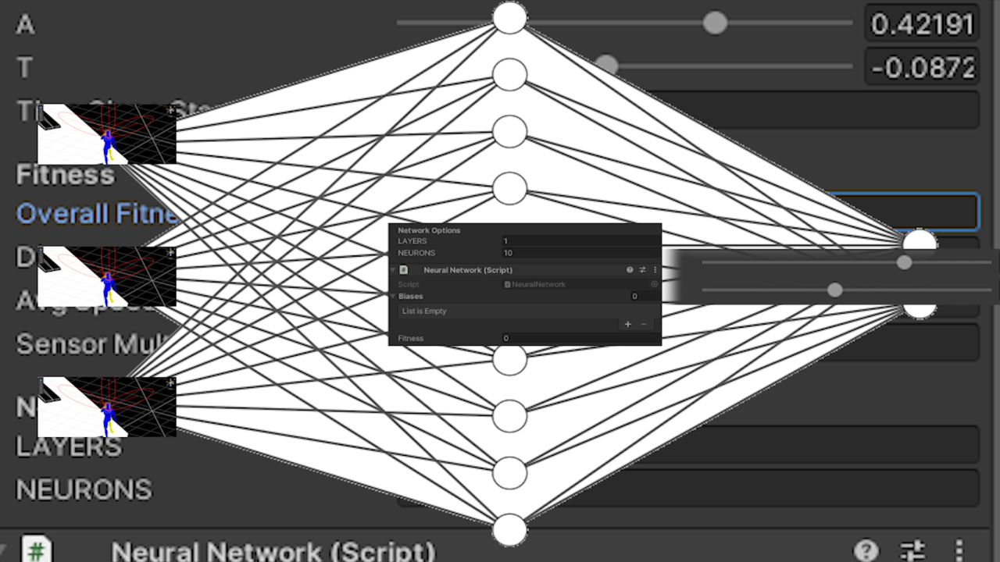

Learnerunner
Generating an AI to Learn Running
This project involved teaching a bot how to run. Through this game, I explored neural networks and genetic algorithms. To fully grasp these concepts, I decided to implement both within the same AI project.

My algorithms worked in tandem: a brain was randomly generated, taking three inputs. These inputs included the distance to the end of the road. The neural network processed this information using different weights across neurons on three different layers.
The brain then outputted two elements: the speed at which the character should move and the direction it should turn. When a character reached the end of the road, it "died." After an entire generation perished, a new generation was created from the best runners. Over multiple generations, the bots learned how to run.